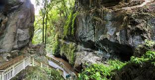
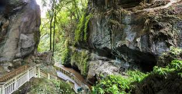

About Wayanad
Wayanad, located in the lush green hills of the Western Ghats, is known for its scenic beauty, wildlife sanctuaries, and spice plantations. It's a haven for nature enthusiasts and adventure seekers alike, offering stunning waterfalls, ancient caves, and serene viewpoints. Wayanad, nestled in the picturesque Western Ghats of Kerala, is a treasure trove of natural beauty, cultural richness, and historical significance. Known as the "Land of Paddy Fields," Wayanad enchants visitors with its lush green valleys, misty hills, and sprawling spice plantations. The district is a haven for nature enthusiasts, offering breathtaking sights like the heart-shaped lake at Chembra Peak, the cascading waters of Meenmutty and Soochipara waterfalls, and the mysterious Edakkal Caves adorned with ancient carvings. Wildlife enthusiasts can explore the Wayanad Wildlife Sanctuary, home to elephants, tigers, and exotic bird species, or venture into the dense forests of Tholpetty and Muthanga for a thrilling safari. Rich in history and culture, Wayanad is dotted with landmarks like the Thirunelli Temple, an ancient shrine dedicated to Lord Vishnu, and the Pazhassi Raja Tomb, which honors the valiant ruler who resisted British colonization. The region also offers a delightful array of activities, from trekking and camping to bamboo rafting and plantation tours. Food lovers can indulge in Wayanad's culinary delights, including traditional dishes like Puttu and Kadala Curry, Pathiri, and Kozhikode Biriyani, accompanied by aromatic cardamom tea or freshly brewed coffee. Celebrated for its vibrant festivals like Onam and the Wayanad Tourism Festival, the district also showcases the traditions of its tribal communities through music, dance, and crafts. With its cool climate, Wayanad is a year-round destination, although the post-monsoon months from October to May are ideal for outdoor adventures. Easily accessible by air, rail, and road, Wayanad promises an unforgettable journey into the heart of Kerala's natural and cultural splendor.
Image Gallery
 


Favourite Food Spots
- Malabar Biryani Paradise
- Tea and Spices Café
- Traditional Kerala Sadya